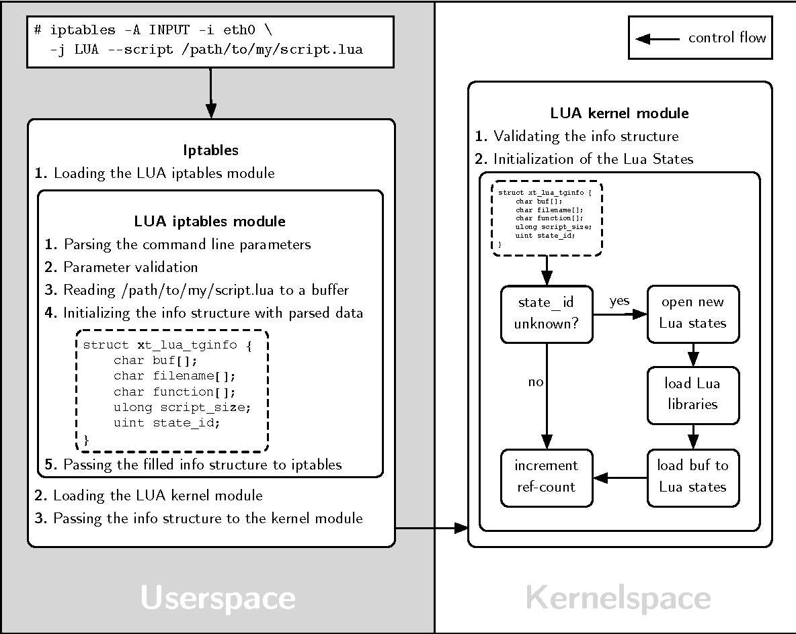

As I was surfing the net, trying to find a way to prototype network protocols or features in Linux. I stumbled upon PacketScript.
PacketScript is the an implementation of the Lua VM inside Linux kernel. Such implementations aren’t new ,luak and lunatik have been existed for some time. However what makes PacketScript different is the ability to mangle network packets with Lua. Not just running Lua code in kernel. as a matter of fact PacketScript uses lunatik underneath as its Lua in kernel engine.
PacketScript is built on existing technologies, ensuring more future maintainability. It is built on iptables infrastructure and on existing xtable-addons platform. Using xtables-addons makes PacketScript needless of kernel patching and compiling. You simply need to install the kernel module. xtables-addons also provides help for adding features into iptables command line interface.
PacketScript was work of André Graf as his master thesis in University of Basel. Since its original publication of thesis and source code, It has gone unmaintained since. It is currently working and I’m not aware of any bugs but the lack of maintenance may make this project unsuitable for production usage (unless forked and maintained by yourself).
Note that PacketScript compiles on linux kernel 2.x. (unless you apply the patch)
Being very disappointed from the kernel version supported by PacketScript, I found a patch by OpenWrt team who has ported PacketScript to 4.x kernels! The patch is for OpenWrt but you can easily apply it to the source and build on any other distro. (I am using PacketScript on OpenWrt myself).
If you want to use PacketScript on OpenWrt you just need to select it in menuconfig (Network->IPTables->ipt-mod-lua).
We will use Debian stable (jessie) in this guide to learn the patching process. The same process can be used for other distros too. Let’s Start :
1
2
3
4
5
6
7
8
9
10
11
12
13
14
15
16
17
18
19
20
21
22
23
24
25
26
27
28
29
30
31
32
1. Installing dependencies
# apt install libxtables-dev linux-headers-$(uname -r) build-essential pkg-config
2. Download xtables-addons https://sourceforge.net/projects/xtables-addons and extract files.
3. Download patches
$ cd xtables-addons-3.2/
$ wget "https://github.com/openwrt-mirror/openwrt/raw/master/package/network/utils/xtables-addons/patches/201-fix-lua-packetscript.patch"
$ wget "https://raw.githubusercontent.com/openwrt-mirror/openwrt/master/package/network/utils/xtables-addons/patches/200-add-lua-packetscript.patch"
4. Apply patches
$ patch -p1 < 200-add-lua-packetscript.patch
$ patch -p1 < 201-fix-lua-packetscript.patch
5. change config files (only necessary if patch fails at config files)
At this stage due to difference between xtables-addons version the first patch may fail at config file, You need to change them manually and remove all patch rejects and backups.
5.1. Change configs
add 'build_LUA=m' to the 'xtables-addons-1.xy/mconfig' file
add 'obj-${build_LUA} += LUA/' to the 'xtables-addons-1.xy/extensions/Mbuild' file
add 'obj-${build_LUA} += LUA/' to the 'xtables-addons-1.xy/extensions/Kbuild' file
5.2. Remove rejects and backups
$ find -name "*.rej" -delete
$ find -name "*.orig" -delete
6. Build & Install
$ make
# make install
Note that despite installing, the module may not be loaded, to do so:
1
# insmod /lib/modules/$(uname -r)/extra/xt_LUA.ko
Note: Module may not be installed in a valid location in order to be detected by modprobe. use symlinks or change the Makefile accordingly. See this or this.
Now everything should be ready:
1
2
3
root@debian:~# iptables -I INPUT -j LUA
iptables v1.6.0: LUA: --script parameter required
Try `iptables -h' or 'iptables --help' for more information.

Destination NAT (DNAT)
Create a lua script like this (dnat.lua) :
1
2
3
4
5
6
function process_packet(p)
local ip = p:data(packet_eth):data(packet_ip)
if not ip then return NF_DROP end
ip:daddr():set("2.1.1.1")
return XT_CONTINUE
end
Then push it into kernel like this:
1
# iptables -t mangle -A POSTROUTING -d 8.8.8.8 -j LUA --script dnat.lua
It is recommended to utilize Netfilter matches and extensions and use PacketScript when they cannot do what you want for performance reasons.
I am prototyping some new features in PacketScript. If my employer agreed upon open sourcing those I will create a GitHub repo and update this post with this links.
No guide is available on the internet for PacketScript. I hope this post would be useful. I am glad to answer questions in comments. Let me know of your network prototyping tools.
Comments powered by Disqus.